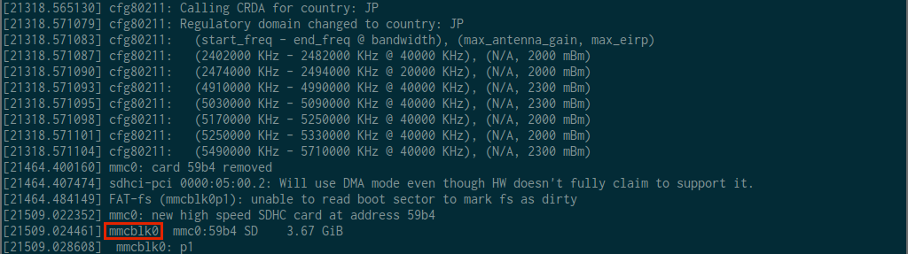
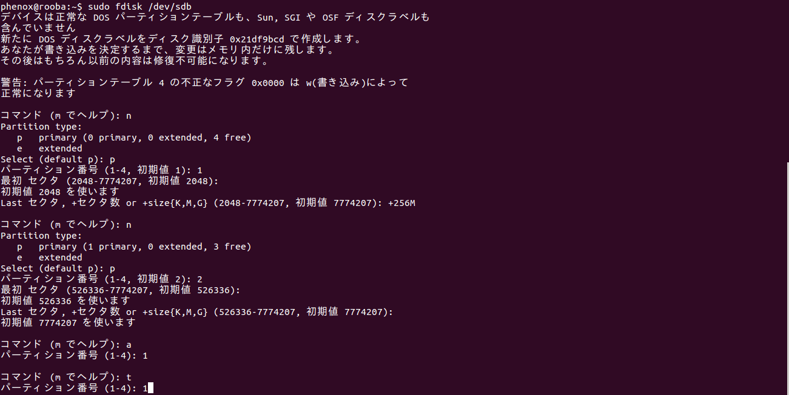
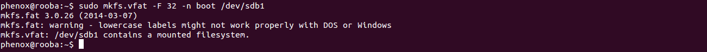
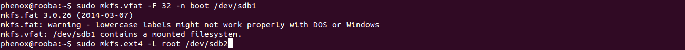
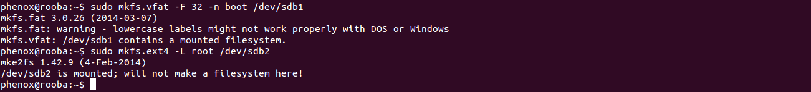

マイクロ SD カード上に環境構築をする
Phenox2 には Linux (Ubuntu 13.04) が搭載されており、 この Linux 上で飛行制御システムが作動しています。 この Linux はマイクロ SD カード上に構築されており、 ユーザーの好みに応じてカスタマイズすることが可能です。 ここでは、出荷時と同等の環境をマイクロ SD カード上に構築する方法を説明します。
なお以下の環境構築には Ubuntu 14.04 LTS を使用しています。
1. まず、4 GB以上の容量を持った マイクロ SD カードを用意してください。 SD カード内にデータがある場合は、環境構築を行うと全て失われてしまいますので、 必要に応じてバックアップを取ってください。
2. ターミナル（端末、Terminal）を開きます。 デスクトップからメインメニューを開いてください。
検索窓に "terminal" と入力し、端末をクリックしてください。
ターミナルが開き、待機状態になります。

3. 用意した SD カードをコンピューターに接続してください。
4. SD カードの識別子を確認します。
ターミナルでdmesgコマンドを実行してください。
（dmesgと入力してEnterを押してください。）

画面出力の最後の方に SD カードについてのメッセージが現れます。
SD カードのメッセージは環境によって違う種類のものが確認されています。
よく確認の上、以下のマニュアルの該当部分を適宜読み替えて作業を進めてください。
- 識別子が
sdX系の場合
識別子は sdX (X部分は環境によって変化します。)となります。
メッセージの中に、sdX の文字を探します。この例では識別子は sdb となっています。
- 識別子が
mmcblkX系の場合
識別子は mmcblkX (X部分は環境によって変化します。)となります。
メッセージの中に、mmcblkX の文字を探します。この例では識別子は mmcblk0 となっています。

5. SD カードのフォーマットを行います。
次のコマンドの sdX 部分を先程確認した値（sd+数字もしくはmmcblk+数字）に置き換え、実行してください。
sudo dd if=/dev/zero of=/dev/sdX bs=1024 count=1

sudo を実行するのが初めての場合は、管理者権限のパスワードを尋ねられます。
パスワードを入力して Enter を押してください。

以下のような出力が出れば成功です。
6. 次に SD カードにパーティションを２つ作成します。
次のコマンドの sdX 部分を先程確認した値に置き換え、実行してください。
sudo fdisk /dev/sdX
ターミナルが対話モードに切り替わります。
コマンド（mでヘルプ）:と出ますのでn と入力します。

Select (default p):にp と入力します。

パーティション番号（1-4、初期値１）: に1 と入力します。

最初 セクタ （2048-XXXXXXX、初期値 2048）：には何も入力しないで Enter を押します。

初期値 2048を使いますと出力されます。

Last セクタ, +セクタ数 or +size{K,M,G} (2048-XXXXXXX, 初期値 XXXXXXX)：に+256M と入力します。
特に出力はありませんが、これで１つ目のパーティション作成は完了です。

続けて二つ目のパーティションを作成します。
コマンド（mでヘルプ）:にn、
Select (default p):にp、
パーティション番号（1-4、初期値１）: に2 と順に入力していきます。

最初 セクタ （XXXXXXX-YYYYYYY、初期値 XXXXXXX）：には何も入力しないで Enter を押します。
初期値 XXXXXXXを使いますと出力されます。
Last セクタ, +セクタ数 or +size{K,M,G} (XXXXXXX-YYYYYYY, 初期値 YYYYYYY)：に再び何も入力しないで Enterを押します。
２つ目のパーティション作成が完了しました。
次に、それぞれのパーティションのシステムタイプと ID を変更します。
まずパーティション１のシステムタイプを変更します。
コマンド（mでヘルプ）:と出ますのでa と入力します。

パーティション番号（1-4）: に 1 と入力します。

コマンド（mでヘルプ）:にt と入力します。

パーティション番号（1-4）: に 1 と入力します。

16進数コード（Lコマンドでコードリスト表示）： に c と入力します。
 パーティション１のシステムタイプが変更されました。
パーティション１のシステムタイプが変更されました。
次はパーティション２のシステムタイプを変更します。
コマンド（mでヘルプ）:にt と入力します。

パーティション番号（1-4）: に2 と入力します。
16進数コード（Lコマンドでコードリスト表示）： に 83 と入力します。
パーティション２のシステムタイプが変更されました。
これまでの入力を確認します。
コマンド（mでヘルプ）:にp と入力します。

次のようになっていることを確認します。(数字部分は環境によって異なります)
| デバイス | ブート | 始点 | 終点 | ブッロク | Id | システム |
|---|---|---|---|---|---|---|
| /dev/sdX1 | * | XXXXXXX | YYYYYYY | BBBBBBB | c | W95 FAT32 (LBA) |
| /dev/sdX2 | XXXXXXX | YYYYYYY | BBBBBBB | 83 | Linux |
もし結果が違っていれば、Ctrl+cで操作を中断し、一連の操作を最初からやり直してください。
正しく進んでいれば w を入力し、変更を反映させます。
fdisk の書き込みが完了したら、SD カードを一度抜き、再び差し直します。
7. 作成した２つのパーティションにファイルシステムを構築します。
次の２つのコマンドを、sdX を先程確認した値（sd+数字もしくはmmcblk+数字）に置き換えた上で、順番に実行してください。
sudo mkfs.vfat -F 32 -n boot /dev/sdX1
sudo mkfs.ext4 -L root /dev/sdX2
(注意：このコマンドでは先程作成したパーティションを指定するために、
sdX の後に 1, 2 が付け加わっています。注意して実行してください。)



 処理が完了したら、SD カードを一度抜き、再び差し直します。
8. 最後に、Phenox Lab の Web サイトより、 必要なソフトウェアをダウンロードし、SD カード上に展開します。
以下のコマンドを実行して、ソフトウェアをダウンロードしてください。
wget http://phenoxlab.com/static/phenox_boot_master.tar.gz
wget http://phenoxlab.com/static/phenox_ubuntu_master.tar.gz
次に、以下のコマンドでダウンロードした圧縮ファイルを解凍します。
tar zxvfp phenox_boot_master.tar.gz
tar zxvfp phenox_ubuntu_master.tar.gz
最後に、解凍したファイルを SD カードにコピーします。
以下のコマンドの <username> 部分を現在ログインしているユーザー名に置き換え、実行してください。
写真の例ではユーザー名は phenox になっています。
（なお、最後のコピーには時間がかかりますのでご注意ください。）
cp -a phenox_boot_master/* /media/<username>/boot/
sudo cp -a phenox_ubuntu_master/* /media/<username>/root/
コピーが完了したら、SD カードをコンピューターから取り出します。
次のコマンドの <username> 部分を現在ログインしているユーザー名に置き換え、実行してください。
umount /media/<username>/root /media/<username>/boot